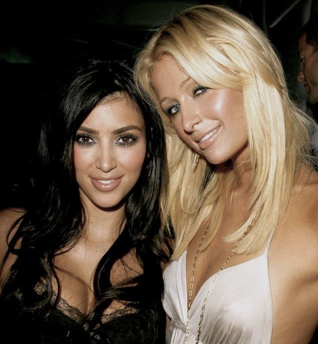

Streaming Revolution: How It’s Shaping the Future of Music
Summary: From record labels to independent artists, streaming is changing the game. Discover how this digital shift is creating new opportunities, presenting challenges, and what lies ahead for the music industry’s next chapter.
Britney Spears and the Paparazzi Frenzy: The Price of Fame
Summary: Britney Spears' struggles with paparazzi highlight the dark side of fame. Constant media attention, especially during her personal challenges, has taken a toll on her mental health and privacy, showing the high cost of celebrity.
Kanye West: Genius or Villain? The Battle Between Art and the Media
Summary: Kanye West’s brilliance as an artist is often overshadowed by his controversial moments and media battles. How has the press shaped his public image, and does it truly capture the complexity of his genius? The clash between his creative vision and public perception continues to unfold.
From Flashbulbs to Fame: How the Paparazzi Made Paris Hilton and Kim Kardashian Icons

Summary: With every flash, Paris Hilton and Kim Kardashian’s journeys from socialites to global icons were fueled by the paparazzi. But did the media’s obsession help or hurt their climb to fame? Discover how they turned chaos into empire.
Justin Bieber: Paparazzi Attacks and the Pressure of Fame
Summary: Caught in a never-ending storm of flashing cameras and public criticism, Justin Bieber’s fame has come at a steep price. What’s it really like when the world watches your every move? The toll of living in the spotlight might surprise you.
Whitney Houston and the Paparazzi
Summary: WThe paparazzi’s obsession with Whitney Houston painted a picture of a flawless star, but behind the camera flashes was a woman battling her own demons. How did relentless media attention shape her legacy and impact her life?